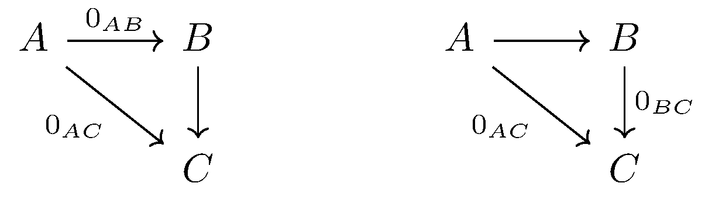
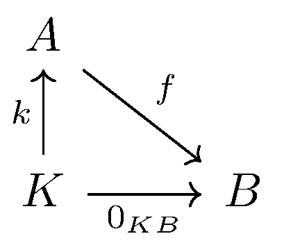
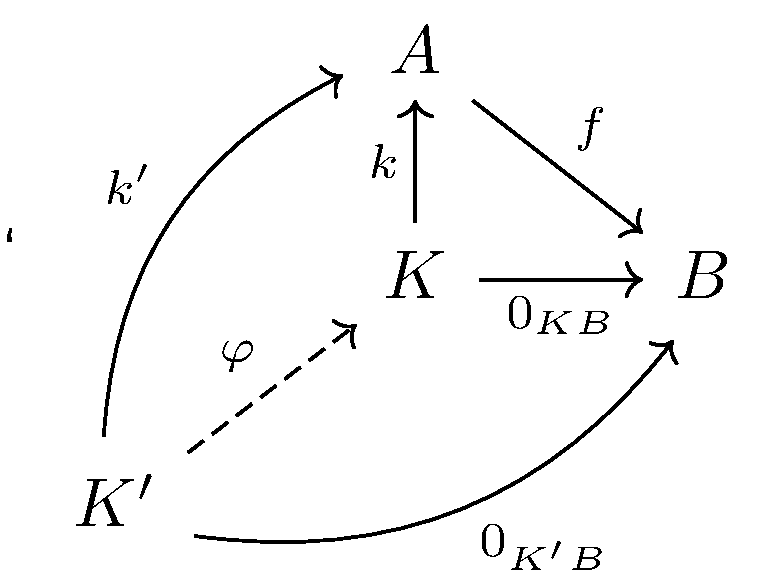

October 25th
Today I learned the definition of the categorical kernel. We begin with the definition of zero morphisms. It's zero morphisms plural because we define zero morphisms to be a set of morphisms in $\mathcal C$ that satisfy the property\[0\circ a=b\circ 0=0\]for any other morphisms $a$ and $b.$ Explicitly, every pair of objects $A,B\in\mathcal C$ is equipped with a zero morphism $0_{AB},$ and for any additional morphism $\varphi:B\to C,$ we have\[\varphi\circ 0_{AB}=0_{AC}.\]Similarly, for any additional morphism $\varphi:C\to A,$ we have\[0_{AB}\circ\varphi=0_{CB}.\]In other words, the following pair of diagrams always commute.
As an example, the category of groups has these very convenient morphisms $0:G\to G'$ by $g\mapsto e,$ which satisfy this condition. Indeed, composing any morphism before this still sends everything to the identity, and doing anything afterwards is doomed just to send the identity to the identity.
To define the kernel, now, we start with a function $f:A\to B.$ Then the kernel is an object $K$ with a morphism $k:K\to A$ to be thought of an inclusion mapping. We also require that $K\to A\to B=0_{KB}$ is the zero morphism and that if there's a parallel mapping $k':K'\to A$ with $K'\to A\to B=0_{K'B},$ then $k'$ factors uniquely through $k.$ In diagrams, this commutes.
And there is a unique $\varphi$ making this commute.
As alluded to, $K$ is usually what we refer to as "the kernel'' because we would like it to be a subset of the input space; explicitly, we want $k$ to be an inclusion. For example, using our category of groups again, the typical kernel gets the job done. Indeed, $\ker(f)$ in groups is by definition the subgroup of $A$ which goes to the identity, and going to the identity is what our zero morphisms are.
And if we have another group so that $K'\to A\to B$ also goes to the identity, then this must be a subgroup of our original kernel, letting us back-construct the inclusion mapping into $K.$ This completes our checks.